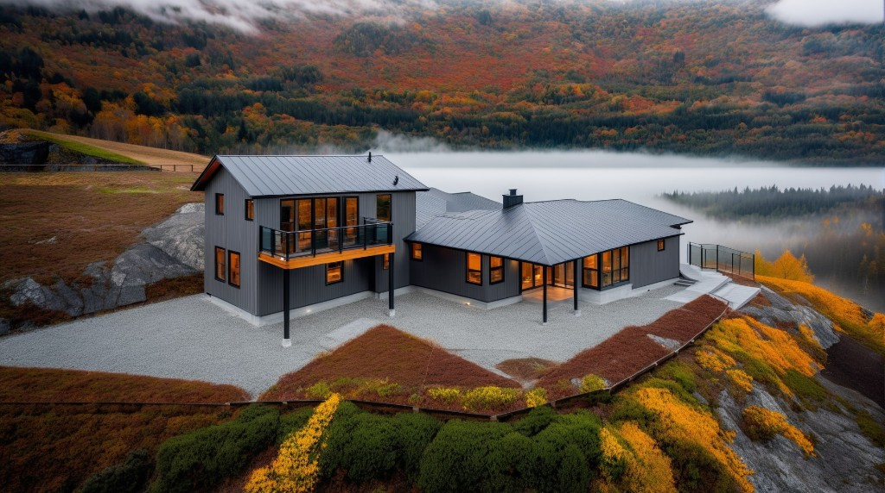
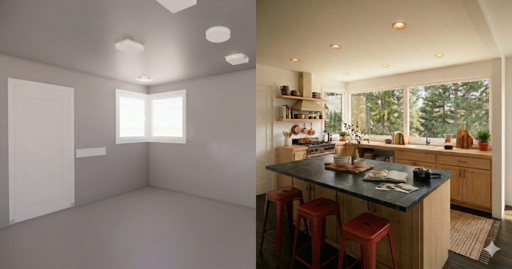

AI-powered technology has transformed rapid 3D visualization from an expensive, desirable feature into an essential tool for design and communication. Visualizations for buildings, rooms, and sites are available in three distinct formats:
- Photorealistic Design Ideation
- 3D "Fly-through"
- 3D VR model Review
AI tools now offer rapid and affordable exploration of design directions. After a model is created and imported into AI software, users can navigate the space ("look around"), create video walkthroughs, and select specific interior or exterior views to quickly test new materials, furnishings, and renovation concepts.
Photorealistic Design Ideation
A basic 3D model allows for the effortless visualization and sharing of design possibilities.
Designers can quickly generate an impression of a space—in just a couple of minutes—by using existing images or simple verbal prompts (e.g., "modern kitchen with dark gray floors, natural wood cabinets and modern light fixtures").
The resulting images serve to spark new ideas and clarify a client's aesthetic preferences. This, in turn, directs rapid version exploration through changes to the AI prompt and geometric adjustments within the model.
The process
After generating a 3D model of the property, various AI tools are used to test new designs.
The initial step typically involves quickly modifying the model's basic geometry—for example, removing or opening walls, or adding features like windows, raised ceilings, or skylights.
Once the model is ready, a 3D view (such as an interior perspective of the kitchen from the dining room's viewpoint) is generated and imported into the AI tool. For the example provided, the model was created in Revit and then exported to Veras.
The AI tool often provides a grid of preset "prompts" to start the design process. Our standard initial prompt was: "white kitchen, white walls, white ceiling, gray wood floor, forest outside, professional photography." This resulted in an image that was too modern.
Using this initial rendering as a baseline, we refined the design with a new prompt: "dark wood floors with less visible grain, light wood cabinets, add an island with honed granite surface and three red metal stools, remove ceiling surface fixtures and replace with recessed cans."
The outcome of this revised prompt is displayed in the side-by-side comparison below.

Read more
Rapid, AI-driven 3D visualization is a tool for exploring any site, building, or interior view. The output consists of 2D images, useful for quick ideation, but these visualizations do not alter the geometry of the underlying 3D base model. For instance, in the example kitchen, adding an island and new windows in the visualization did not change the 3D model, which still showed the existing windows and lacked an island.
Typically, the outcomes from the 3D visualization process prompt the generation of new versions of the 3D model. These updated models can then be imported back into the AI visualization tool for continued exploration.
3D "Fly-through"
A 3D fly-through or walk-through visualization provides a user experience of moving through a space, presented via a series of images or a video.
During the modeling process, 3D modelers utilize rapid walkthroughs, often starting with a basic model lacking materials, finishes, trim, and casework. This streamlines the process by keeping the model small and rendering times fast—a basic walkthrough renders in seconds—which allows for quick feedback between the model and the VR view, ensuring all scanned elements are accurately reproduced before detailed shading and detailing are added, which significantly increases rendering time.
For Clients, Architects, and Designers:
- Clients may find these basic, unfinished 3D fly-throughs valuable for imagining the space's potential, as the lack of color and furnishings offers creative freedom.
- Architects and designers can leverage these models early in the ideation and design development process to suggest structural changes, add details, and incorporate furnishings.
Example walk-through
3D VR model Review
A third way to use the basic 3D model is to "enter" the space virtually with a VR headset. A VR rendering of the space with low detail allows for seamless review in 3D. The user enters the space wearing a headset and can look and go anywhere they like.
Ready to explore design options from your model?
Get in TouchAdditional services
- Site Mapping ECD
- Construction Progress Monitoring
- 3D Visualization (this page)
- Project Context ECD
Property types documented
Discuss visualization, models, and project scope with our team.
Get in TouchRecent blog content View all stories
Start with a conversation about your project.
Get in Touch